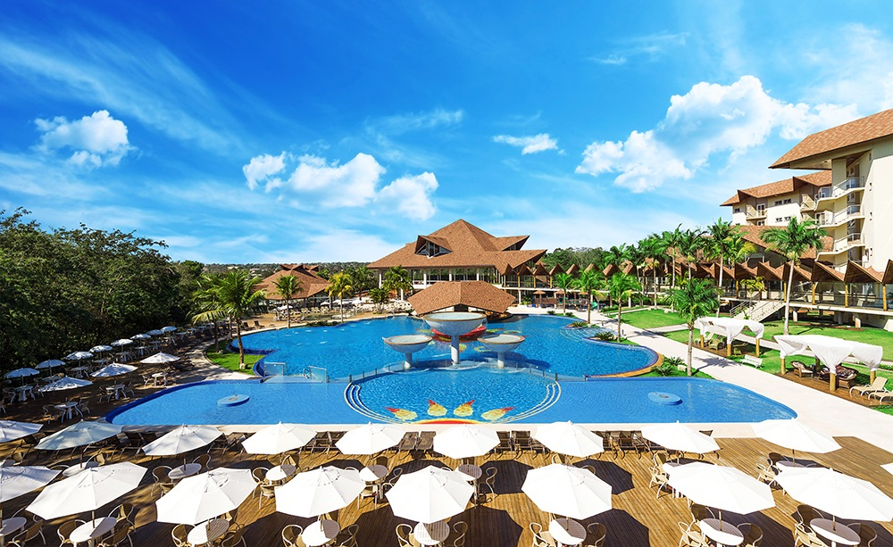

LOCAL
Hotel Recanto Cataratas Thermas Resort & Convention
A PorkExpo 2016 será realizada na cidade de Foz do Iguaçu, no estado do Paraná.
A Sede do evento é o Hotel Recanto Cataratas Thermas Resort & Convention, um espaço que conta com uma arquitetura surpreendente, integrado à exuberante natureza em uma área de 120.000m² - destes, 38.000m² de área nativa protegida. O Hotel Recanto oferece amplas áreas de lazer, praça de entretenimento, um relaxante spa e diversão para todas as idades com serviços de alta qualidade.
Dispõe de 300 unidades entre apartamentos e suítes, categorias diferenciadas e premium para o hóspede mais exigente. Ambientes sofisticados, modernos e confortáveis, onde requinte e elegância, clássico e moderno se combinam perfeitamente.
Avenida Costa e Silva, 3500, Foz do Iguaçu / PR - Brasil www.recantocataratasresort.com.br